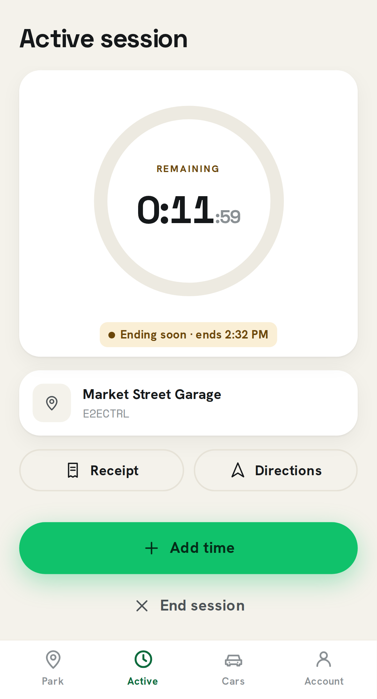
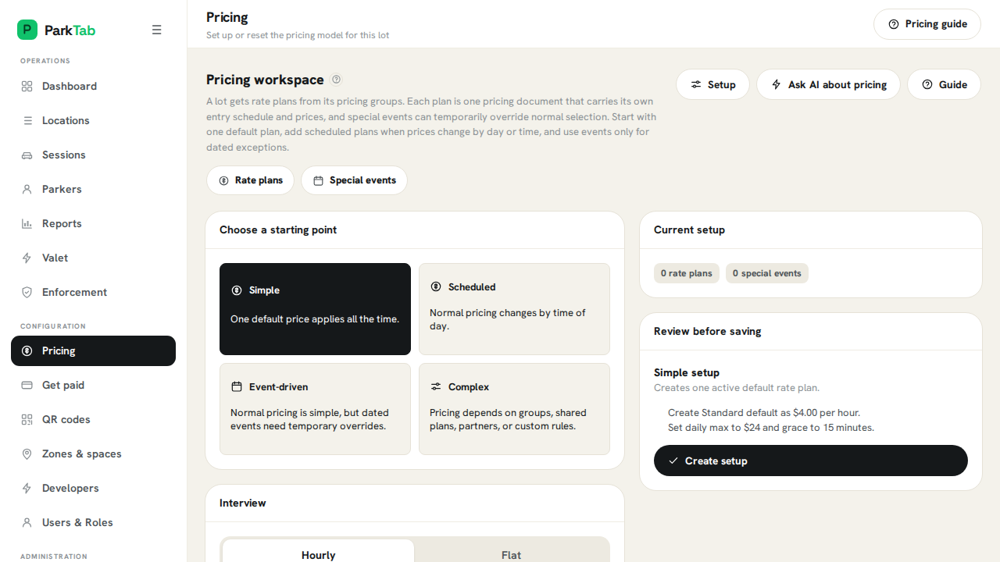
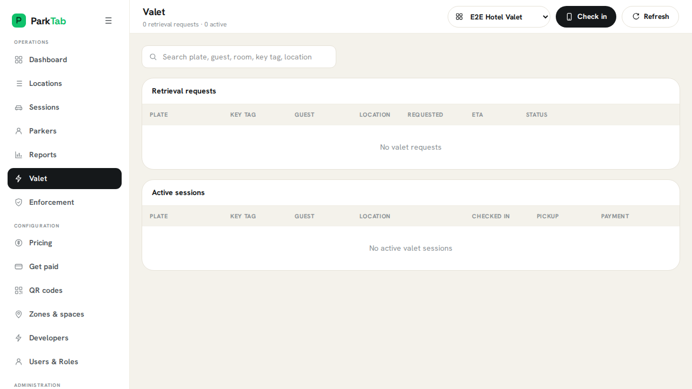
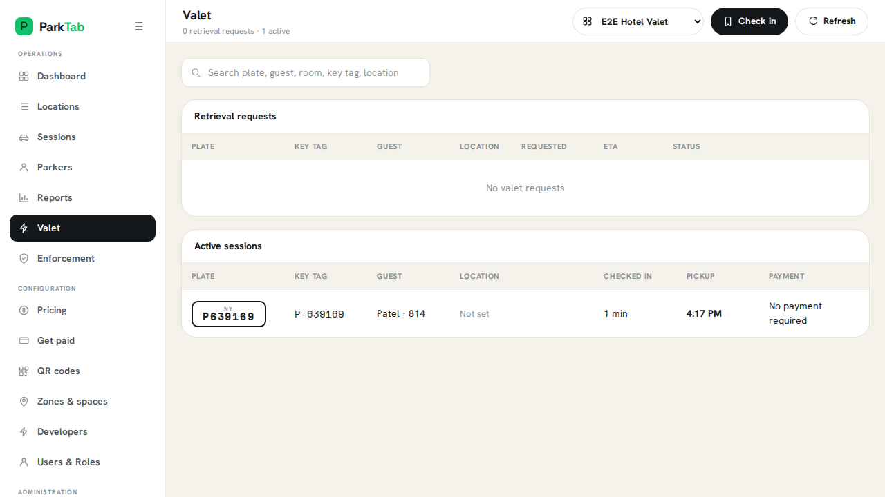

See how ParkTab works.
Reproducible product journeys captured from the real web and mobile applications.
14 flows

Stadium and event checkout
Open an event offer with fixed pricing and an exit deadline, pay, and view the event receipt.

Zero-download self-park
Scan a location QR, choose duration, enter a plate, review price, pay, and confirm parking.

Manage an active stay
Review a countdown, receive an expiry reminder, extend remotely, and mark the stay complete.

Merchant-funded parking
Apply a campaign benefit automatically, show itemized savings, pay the remainder, and view the receipt.

Attendant plate-to-payment
Scan and confirm a plate, choose duration, quote on the server, accept Tap to Pay, and start the session.

Plate-to-authorization verdict
Scan a plate, review OCR confidence, classify paid/overstay/unknown, and inspect history.

Turn a parking sign into a rate
Choose a pricing archetype, enter tiers and caps, preview signage, test boundary stays, and publish.

Tap to Pay enablement
Choose a location, review eligibility and terms, enable Tap to Pay, complete Apple education, and verify readiness.

Twenty-second valet arrival
Recognize a returning vehicle, record plate and key tag, set expected pickup, and notify the guest.

Temporary event staffing
Create a runner grant, accept it from a link, record a location, and complete retrieval.

Anonymous, phoneless valet
Issue a printable paper and QR claim ticket without collecting a phone number.

Hotel-paid parking, guest-paid tip
Check in a folio-paid guest, retrieve the car, and open the guest tip receipt path.

Request-to-handoff lifecycle
A guest requests their car while the operator queue updates through acknowledge, retrieve, ready, and returned states.

Two-sided valet request and handoff
Show the guest and operator together as a pickup request moves through alert, acknowledgement, retrieval, ready for pickup, handoff, and final exit.
No flows match that search.